Try Out TKA Matematika
SMPIT As-Syifa Boarding School Jalancagak 2
Identitas Peserta
I. Pilihan Ganda (Single Choice)
PG1. Ani membeli 2 pulpen dan 2 pensil di sebuah toko alat tulis. Harga satuan pulpen adalah Rp12.000,00 dan harga satuan pensil adalah Rp8.000,00. Kebetulan, toko tersebut sedang memberikan promo "Hemat Berempat" dengan ketentuan sebagai berikut:
“Setiap pembelian 4 barang (boleh campur) akan mendapat potongan harga sebesar harga 1 barang termurah yang dibeli”.
Berapa total harga yang harus dibayar Ani dari semua barang yang dibeli?
Berapa total harga yang harus dibayar Ani dari semua barang yang dibeli?
PG2.Untuk membuat larutan desinfektan atau larutan pembasmi kuman, dibutuhkan cairan \(A\) dan \(B\) dengan perbandingan \(A : B = 3 : 5\).
Jika tersedia 2,5 liter cairan B, maka volume maksimum larutan yang dapat dibuat adalah ….
Jika tersedia 2,5 liter cairan B, maka volume maksimum larutan yang dapat dibuat adalah ….
PG3. Harga setengah kilogram cabe rawit pada hari ini adalah Rp35.000,00.
Jika hari ini Ibu membeli cabe rawit seberat \(2\dfrac{1}{4}\) kilogram, total harga yang harus dibayar Ibu adalah ….
PG4. Perhatikan Cerita Berikut:
Proyek Renovasi Gedung
Proyek renovasi suatu gedung sekolah harus diselesaikan paling lambat dalam waktu 60 hari sesuai dengan kontrak kerja yang telah disepakati bersama. Manajer proyek telah menghitung kebutuhan tenaga kerja dengan asumsi setiap pegawai memiliki kemampuan dan produktivitas yang sama setiap harinya. Kemajuan proyek sangat bergantung pada jumlah pegawai; semakin banyak pegawai yang bekerja, maka waktu pengerjaan akan semakin singkat.
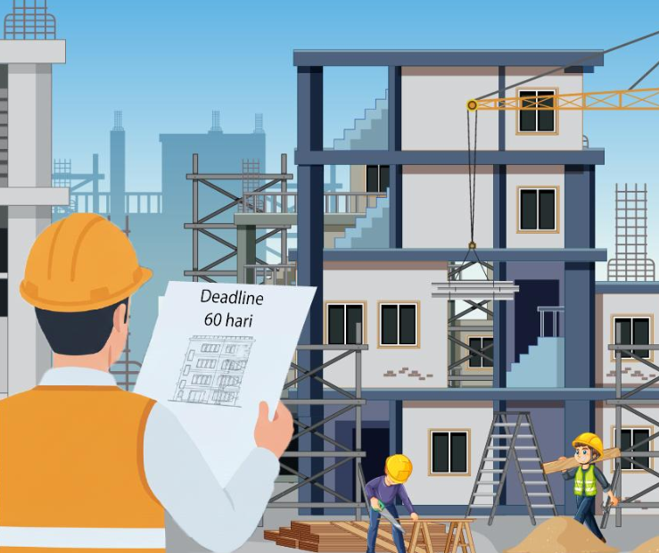
Pekerjaan dinyatakan selesai jika seluruh beban kerja telah terpenuhi. Jika terjadi kendala pada jumlah pegawai atau waktu kerja, manajer harus melakukan penyesuaian agar total beban kerja tetap terpenuhi tepat waktu. Penyesuaian ini sangat penting dilakukan agar renovasi gedung selesai tepat 60 hari tanpa melanggar batas kontrak yang ada.
Berdasarkan perencanaan awal, renovasi gedung dapat diselesaikan oleh 12 pegawai dalam waktu 60 hari. Jika manajer memutuskan untuk menambah jumlah pegawai menjadi 18 orang agar pekerjaan lebih cepat selesai, maka waktu yang diperlukan untuk menyelesaikan renovasi tersebut adalah…
Proyek renovasi suatu gedung sekolah harus diselesaikan paling lambat dalam waktu 60 hari sesuai dengan kontrak kerja yang telah disepakati bersama. Manajer proyek telah menghitung kebutuhan tenaga kerja dengan asumsi setiap pegawai memiliki kemampuan dan produktivitas yang sama setiap harinya. Kemajuan proyek sangat bergantung pada jumlah pegawai; semakin banyak pegawai yang bekerja, maka waktu pengerjaan akan semakin singkat.
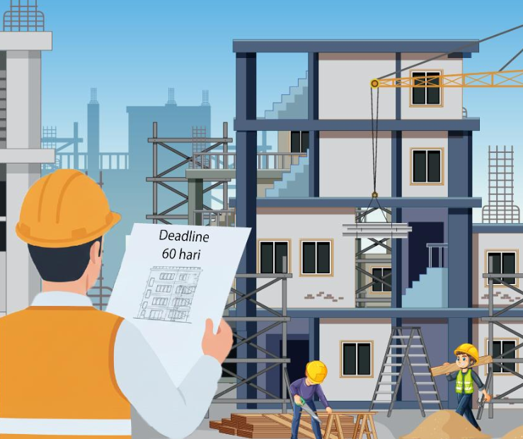
Pekerjaan dinyatakan selesai jika seluruh beban kerja telah terpenuhi. Jika terjadi kendala pada jumlah pegawai atau waktu kerja, manajer harus melakukan penyesuaian agar total beban kerja tetap terpenuhi tepat waktu. Penyesuaian ini sangat penting dilakukan agar renovasi gedung selesai tepat 60 hari tanpa melanggar batas kontrak yang ada.
PG5. Perhatikan Stimulus Berikuti ini:
Jika tidak ada kendala pada pelayanan donor darah, apa yang sedang dilakukan pendonor tersebut setelah 25 menit berlalu?
Alur Pelayanan Donor
DarahKegiatan donor adalah salah satu bentuk aksi kemanusian yang sangat bermanfaat untuk diri sendiri dan orang lain. Setetes darah yang disumbangkan dapat memberikan harapan hidup bagi orang lain yang membutuhkan, terutama mereka yang mengalami kecelakaan, setelah menjalani operasi, atau menderita penyakit yang serius. Tak hanya untuk penerima, pendonor juga bisa mendapatkan manfaat. Diantaranya bermanfaat untuk mendeteksi penyakit, meningkatkan produksi sel darah, dan menjaga kesehatan jantung. Oleh karena itu disarankan untuk melakukan donor darah tiga bulan setelah donor darah terakhir. Biasanya aksi donor darah difasilitasi oleh Palang Merah Indonesia (PMI). Berikut adalah alur kegiatan donor darah di sebuah posko PMI.
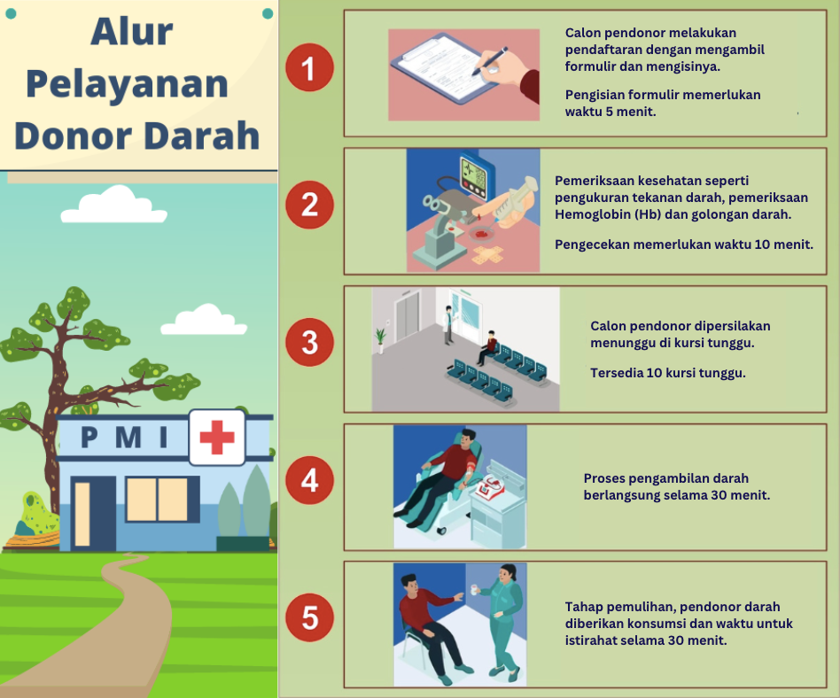
Seorang pendonor darah mendatangi posko PMI. Kebetulan saat ini sedang tidak ada antrian sehingga orang tersebut dapat langsung dilayani.
DarahKegiatan donor adalah salah satu bentuk aksi kemanusian yang sangat bermanfaat untuk diri sendiri dan orang lain. Setetes darah yang disumbangkan dapat memberikan harapan hidup bagi orang lain yang membutuhkan, terutama mereka yang mengalami kecelakaan, setelah menjalani operasi, atau menderita penyakit yang serius. Tak hanya untuk penerima, pendonor juga bisa mendapatkan manfaat. Diantaranya bermanfaat untuk mendeteksi penyakit, meningkatkan produksi sel darah, dan menjaga kesehatan jantung. Oleh karena itu disarankan untuk melakukan donor darah tiga bulan setelah donor darah terakhir. Biasanya aksi donor darah difasilitasi oleh Palang Merah Indonesia (PMI). Berikut adalah alur kegiatan donor darah di sebuah posko PMI.
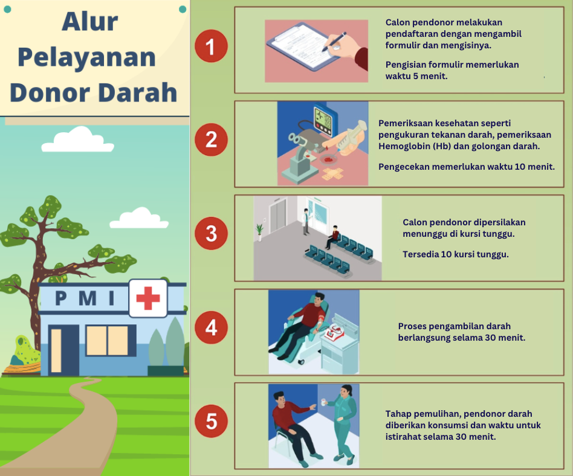
Jika tidak ada kendala pada pelayanan donor darah, apa yang sedang dilakukan pendonor tersebut setelah 25 menit berlalu?
PG6. Perhatikan bentuk aljabar berikut \[(x+2)(3+y)+(x+2)(1-y)\]
bentuk sederhana dari bentuk aljabar di atas adalah....
PG7. Sebuah pabrik memproduksi batang logam. Fungsi \(f(x)=5x+10\) menyatakan berat total (kg) untuk \(x\) batang logam.
PG8. Perhatikan susunan titik berikut!
- Pola ke-1
- ●
- Pola ke-2
- ● ●
- ●
- Pola ke-3
- ● ● ●
- ● ●
- ●
- Pola ke-4
- ● ● ● ●
- ● ● ●
- ● ●
- ●
PG9. Pak Doni mempunyai rumah dengan tampak samping kanan sebagai berikut.

Pak Doni ingin mengecat dinding samping kanan rumah tersebut. Terdapat empat merek cat di pasaran yang dapat digunakan Pak Doni seperti ditunjukkan pada tabel berikut.
Pak Doni ingin mengecat dinding samping kanan rumah tersebut. Terdapat empat merek cat di pasaran yang dapat digunakan Pak Doni seperti ditunjukkan pada tabel berikut.
| Merek Cat | Luas yang dapat di cat (per1 kg) | Kemasan Tersedia |
|---|---|---|
| Momilek | 7 m\(^2\) | 5 kg-an dan 10 kg-an |
| Josun | 8 m\(^2\) | 2 kg-an dan 10 kg-an |
| Bulux | 10 m\(^2\) | 2 kg-an dan 5 kg-an |
| Noppin | 9 m\(^2\) | 1 kg-an dan 5 kg-an |
Pak Doni ingin membeli cat dengan merek yang sama. Supaya sisa cat yang dibeli paling sedikit, cat merek apakah yang sebaiknya dipilih?
PG10. Sebuah usaha rumahan akan mengemas produk makanan menggunakan kemasan berbentuk prisma segitiga yang dibuat dari karton.
Setiap kemasan dibuat dari satu jaring-jaring utuh.
Berikut gambar kemasan dan sketsa jaring-jaringnya.
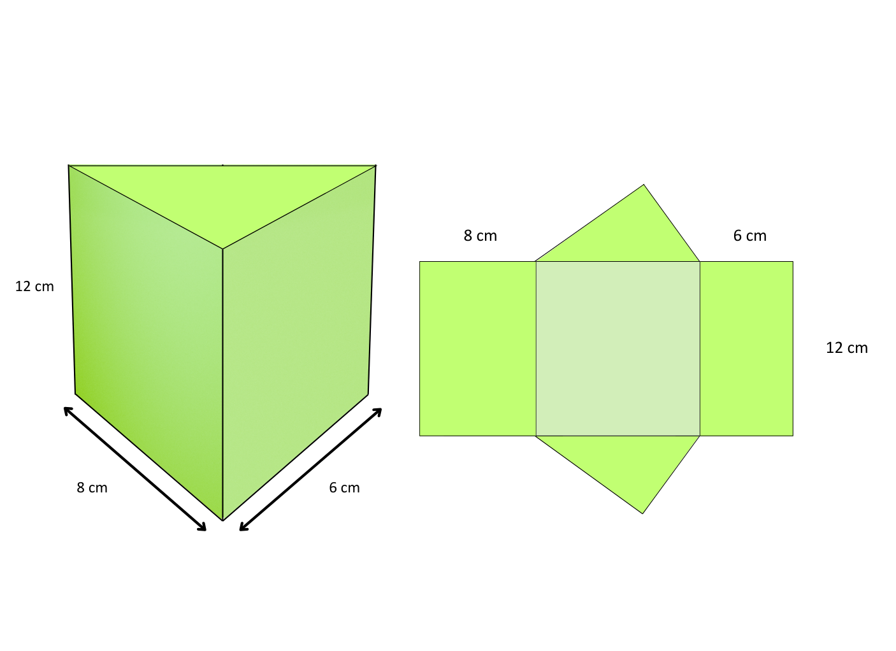
Karton yang tersedia untuk produksi hari itu memiliki ukuran 50 cm x 100 cm. Pemotongan karton dilakukan dengan rapi dan memperhatikan tata letak. Jaring-jaring kemasan dibuat dengan kertas yang saling terhubung dan bukan menggabungkan hasil potongan lain.
Banyak kemasan maksimum yang dapat dibuat adalah ....
Berikut gambar kemasan dan sketsa jaring-jaringnya.
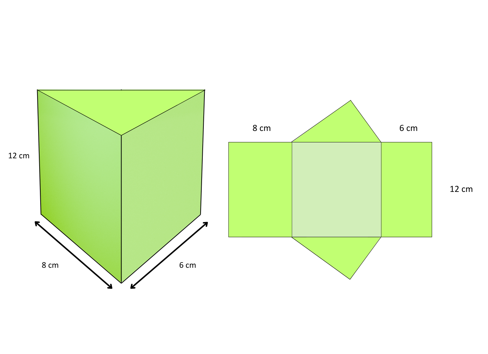
Karton yang tersedia untuk produksi hari itu memiliki ukuran 50 cm x 100 cm. Pemotongan karton dilakukan dengan rapi dan memperhatikan tata letak. Jaring-jaring kemasan dibuat dengan kertas yang saling terhubung dan bukan menggabungkan hasil potongan lain.
Banyak kemasan maksimum yang dapat dibuat adalah ....
PG11. Perhatikan posisi robot pembersih pada gambar berikut!
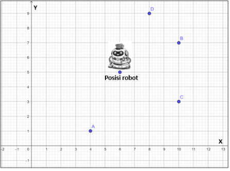
Robot tersebut kemudian akan bergerak mengikuti translasi \(T (4, -2)\).
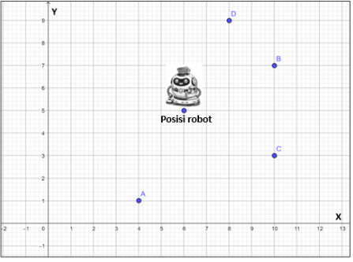
Robot tersebut kemudian akan bergerak mengikuti translasi \(T (4, -2)\).
PG12. Perhatikan gambar berikut!
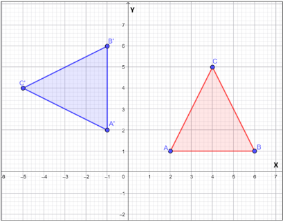
Transformasi tunggal yang paling tepat untuk mengubah posisi segitiga \(ABC\) menjadi segitiga \(A'B'C'\)adalah ....
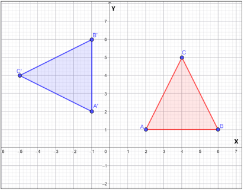
Transformasi tunggal yang paling tepat untuk mengubah posisi segitiga \(ABC\) menjadi segitiga \(A'B'C'\)adalah ....
PG13. Dalam pembangunan sebuah monumen peringatan, kontraktor menggunakan bata ringan berbentuk balok untuk menyusun bagian dalam monumen. Desain monumen peringatan diberikan pada gambar berikut:
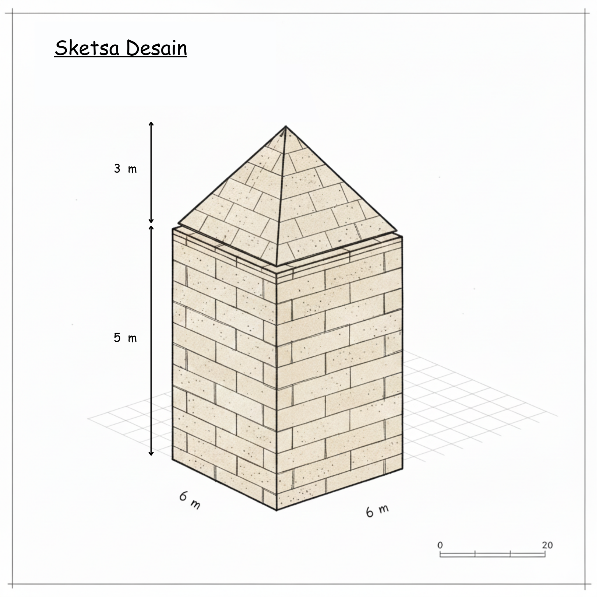
Setiap bata ringan yang digunakan berukuran \(60 \ \text{cm} \times 20 \ \text{cm} \times 10 \text{cm} \). Susunan bata ringan pada monumen tersebut dianggap tersusun rapat tanpa celah.
Berapakah jumlah minimal bata ringan yang diperlukan untuk membangun monumen tersebut?
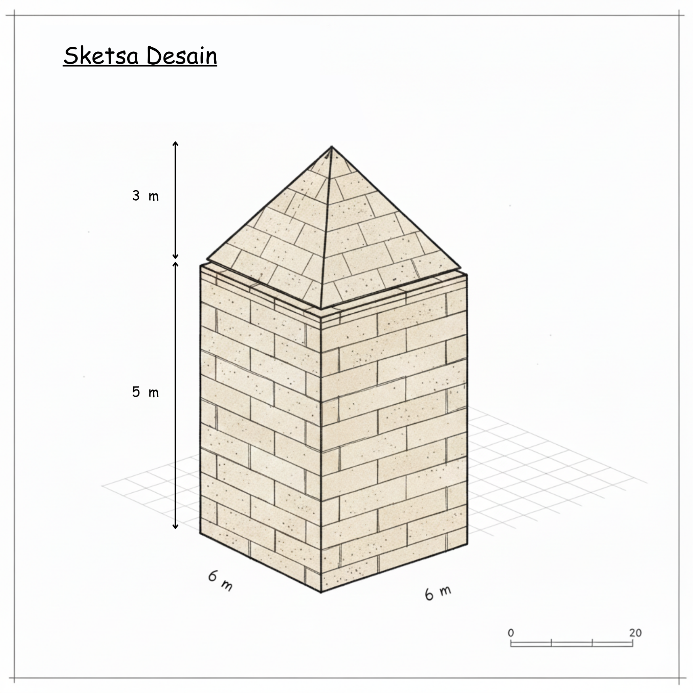
Setiap bata ringan yang digunakan berukuran \(60 \ \text{cm} \times 20 \ \text{cm} \times 10 \text{cm} \). Susunan bata ringan pada monumen tersebut dianggap tersusun rapat tanpa celah.
Berapakah jumlah minimal bata ringan yang diperlukan untuk membangun monumen tersebut?
PG14.Petugas perpustakaan di suatu sekolah melakukan pendataan jumlah buku yang dipinjam siswa kelas IX selama 5 hari berturut-turut. Hasil pendataan disajikan dalam diagram berikut:
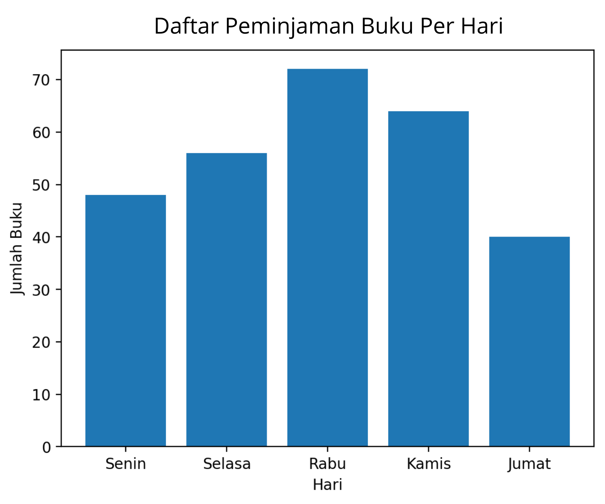
Pernyataan yang tepat tentang informasi pada diagram batang tersebut adalah...
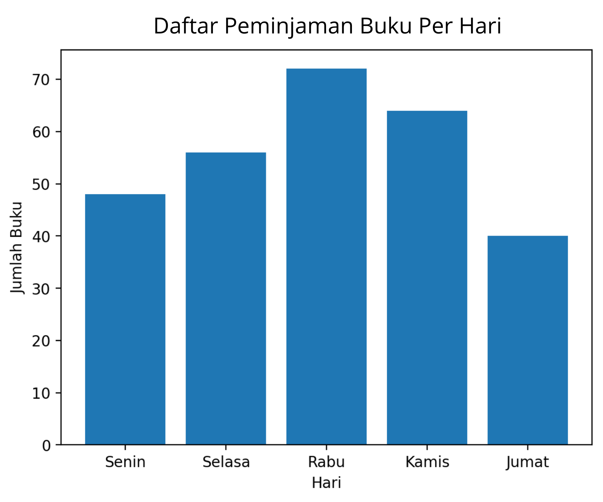
Pernyataan yang tepat tentang informasi pada diagram batang tersebut adalah...
PG15.Berdasarkan data diketahui bahwa rata-rata berat satu butir telur kecil 45 gram, satu telur sedang 55 gram,
dan satu telur besar 65 gram. Seorang karyawan toko bahan pangan, sedang mengemas setiap 10 butir telur ke dalam
satu kemasan dengan ketentuan bahwa rata-rata berat per telur dalam setiap kemasan tersebut adalah 55 gram.
Jika dalam satu kemasan sudah berisi 1 telur besar, 5 telur sedang, dan 2 telur kecil, maka dua telur tambahan yang harus dipilih supaya tetap memenuhi aturan pengemasan adalah ….
Jika dalam satu kemasan sudah berisi 1 telur besar, 5 telur sedang, dan 2 telur kecil, maka dua telur tambahan yang harus dipilih supaya tetap memenuhi aturan pengemasan adalah ….
PG16. Untuk menjaga dan meningkatkan kualitas produksi, tim bagian quality control memeriksa kualitas lampu yang diproduksi pada suatu waktu. Berdasarkan pemeriksaan yang dilakukan, diperoleh data sebagai berikut:
- Jumlah lampu dengan kondisi baik: 980 buah
- Jumlah lampu dengan kondisi rusak: 20 buah
II. Pilihan Ganda Kompleks (MCMA)
PGK1. Sebuah toko menjual 1 kg beras seharga Rp12.750,00.
Jika seseorang membeli 19,6 kg untuk jenis beras yang sama, berapa perkiraan total harga yang mungkin?
Pilih semua jawaban benar! Jawaban benar lebih dari satu.
Pilih semua jawaban benar! Jawaban benar lebih dari satu.
PGK2. Terdapat tiga bilangan yang dinyatakan dengan \( (33^2 − 32) \), \( (8^2 + 296) \), dan \( (36 × 35) \).
Bilangan apa saja yang merupakan faktor persekutuan ketiga bilangan tersebut? Pilihlah jawaban yang benar! Jawaban benar lebih dari satu.
Bilangan apa saja yang merupakan faktor persekutuan ketiga bilangan tersebut? Pilihlah jawaban yang benar! Jawaban benar lebih dari satu.
PGK3. Perhatikan Cerita Berikut:
Rencana awal renovasi gedung diproyeksikan untuk 20 pegawai. Namun setelah pekerjaan berjalan 24 hari, pekerjaan berhenti total selama 12 hari (tidak ada pegawai yang bekerja) karena kendala cuaca. Manajer proyek melakukan analisis untuk menentukan langkah penyesuaian jumlah pegawai.
Berdasarkan situasi tersebut, berikut ini manakah pernyataan yang sesuai tentang penyelesaian renovasi gedung dalam sisa waktu yang tersedia? Pilih semua jawaban benar! Jawaban benar lebih dari satu.
Proyek Renovasi Gedung
Proyek renovasi suatu gedung sekolah harus diselesaikan paling lambat dalam waktu 60 hari sesuai dengan kontrak kerja yang telah disepakati bersama. Manajer proyek telah menghitung kebutuhan tenaga kerja dengan asumsi setiap pegawai memiliki kemampuan dan produktivitas yang sama setiap harinya. Kemajuan proyek sangat bergantung pada jumlah pegawai; semakin banyak pegawai yang bekerja, maka waktu pengerjaan akan semakin singkat.
Pekerjaan dinyatakan selesai jika seluruh beban kerja telah terpenuhi. Jika terjadi kendala pada jumlah pegawai atau waktu kerja, manajer harus melakukan penyesuaian agar total beban kerja tetap terpenuhi tepat waktu. Penyesuaian ini sangat penting dilakukan agar renovasi gedung selesai tepat 60 hari tanpa melanggar batas kontrak yang ada.
Proyek renovasi suatu gedung sekolah harus diselesaikan paling lambat dalam waktu 60 hari sesuai dengan kontrak kerja yang telah disepakati bersama. Manajer proyek telah menghitung kebutuhan tenaga kerja dengan asumsi setiap pegawai memiliki kemampuan dan produktivitas yang sama setiap harinya. Kemajuan proyek sangat bergantung pada jumlah pegawai; semakin banyak pegawai yang bekerja, maka waktu pengerjaan akan semakin singkat.
Pekerjaan dinyatakan selesai jika seluruh beban kerja telah terpenuhi. Jika terjadi kendala pada jumlah pegawai atau waktu kerja, manajer harus melakukan penyesuaian agar total beban kerja tetap terpenuhi tepat waktu. Penyesuaian ini sangat penting dilakukan agar renovasi gedung selesai tepat 60 hari tanpa melanggar batas kontrak yang ada.
Rencana awal renovasi gedung diproyeksikan untuk 20 pegawai. Namun setelah pekerjaan berjalan 24 hari, pekerjaan berhenti total selama 12 hari (tidak ada pegawai yang bekerja) karena kendala cuaca. Manajer proyek melakukan analisis untuk menentukan langkah penyesuaian jumlah pegawai.
Berdasarkan situasi tersebut, berikut ini manakah pernyataan yang sesuai tentang penyelesaian renovasi gedung dalam sisa waktu yang tersedia? Pilih semua jawaban benar! Jawaban benar lebih dari satu.
PGK4.Perhatikan Stimulus Berikuti ini:
Berikut ini pernyataan manakah yang mungkin akan terjadi di posko PMI tersebut?
Pilih semua jawaban benar! Jawaban benar lebih dari satu.
Alur Pelayanan Donor
DarahKegiatan donor adalah salah satu bentuk aksi kemanusian yang sangat bermanfaat untuk diri sendiri dan orang lain. Setetes darah yang disumbangkan dapat memberikan harapan hidup bagi orang lain yang membutuhkan, terutama mereka yang mengalami kecelakaan, setelah menjalani operasi, atau menderita penyakit yang serius. Tak hanya untuk penerima, pendonor juga bisa mendapatkan manfaat. Diantaranya bermanfaat untuk mendeteksi penyakit, meningkatkan produksi sel darah, dan menjaga kesehatan jantung. Oleh karena itu disarankan untuk melakukan donor darah tiga bulan setelah donor darah terakhir. Biasanya aksi donor darah difasilitasi oleh Palang Merah Indonesia (PMI). Berikut adalah alur kegiatan donor darah di sebuah posko PMI.
Pada suatu waktu, Yuda baru saja sampai di posko PMI untuk melakukan donor darah. Diketahui bahwa Rama dan Fajar juga berada di posko PMI tersebut. Rama sedang menunggu antrian untuk proses pengambilan darah, sedangkan Fajar sedang proses pengambilan darah sejak 16 menit yang lalu. Mereka tidak ada janji untuk pulang bersama ketika donor darah selesai.
DarahKegiatan donor adalah salah satu bentuk aksi kemanusian yang sangat bermanfaat untuk diri sendiri dan orang lain. Setetes darah yang disumbangkan dapat memberikan harapan hidup bagi orang lain yang membutuhkan, terutama mereka yang mengalami kecelakaan, setelah menjalani operasi, atau menderita penyakit yang serius. Tak hanya untuk penerima, pendonor juga bisa mendapatkan manfaat. Diantaranya bermanfaat untuk mendeteksi penyakit, meningkatkan produksi sel darah, dan menjaga kesehatan jantung. Oleh karena itu disarankan untuk melakukan donor darah tiga bulan setelah donor darah terakhir. Biasanya aksi donor darah difasilitasi oleh Palang Merah Indonesia (PMI). Berikut adalah alur kegiatan donor darah di sebuah posko PMI.
Berikut ini pernyataan manakah yang mungkin akan terjadi di posko PMI tersebut?
Pilih semua jawaban benar! Jawaban benar lebih dari satu.
PGK5. Sebuah jasa pengantaran barang mengenakan biaya sebagai berikut:
Berikut ini, manakah pernyataan yang benar tentang permasalahan tersebut?
Pilih semua jawaban benar! Jawaban benar lebih dari satu.
- Biaya tetap pemesanan sebesar Rp12.000,00.
- Biaya pengantaran Rp4.000,00 per kilometer.
Berikut ini, manakah pernyataan yang benar tentang permasalahan tersebut?
Pilih semua jawaban benar! Jawaban benar lebih dari satu.
PGK6. Sebuah koperasi sekolah ingin mengevaluasi penjualan alat tulis selama 5 bulan terakhir. Berikut disajikan data jumlah pengunjung koperasi sekolah selama 5 bulan dan data persentase alat tulis yang terjual.
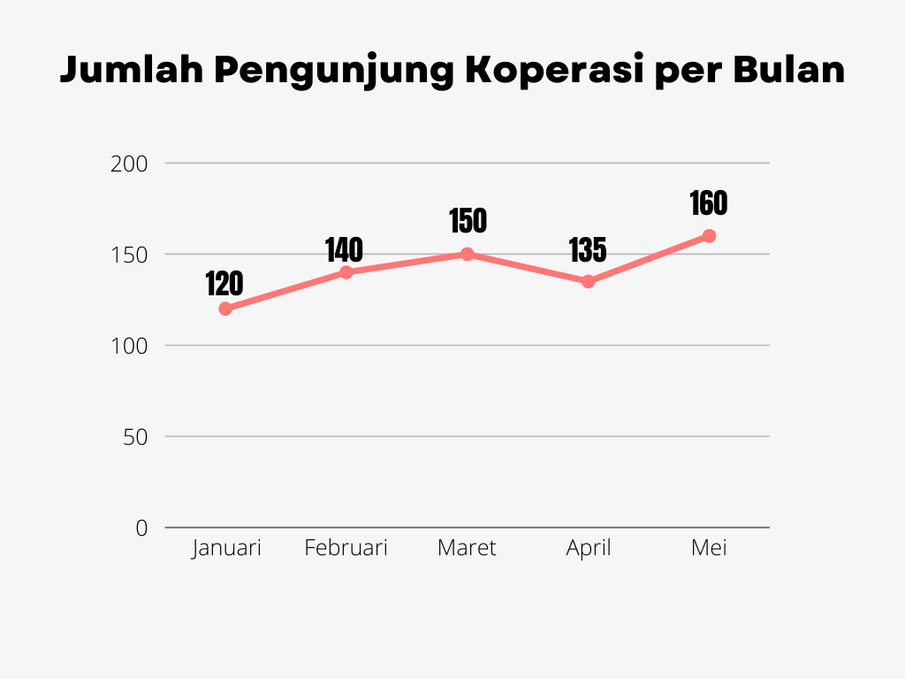 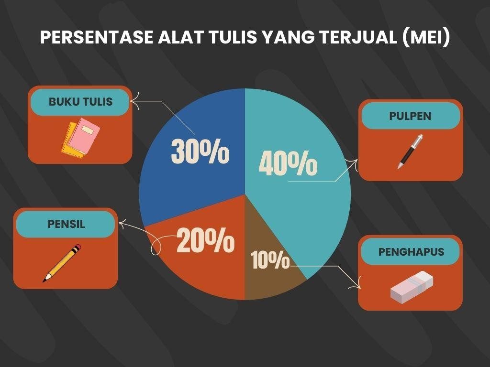
Berdasarkan kedua data tersebut, tentukan manakah pernyataan yang benar untuk setiap pernyataan berikut?
Pilih semua jawaban benar! Jawaban benar lebih dari satu.
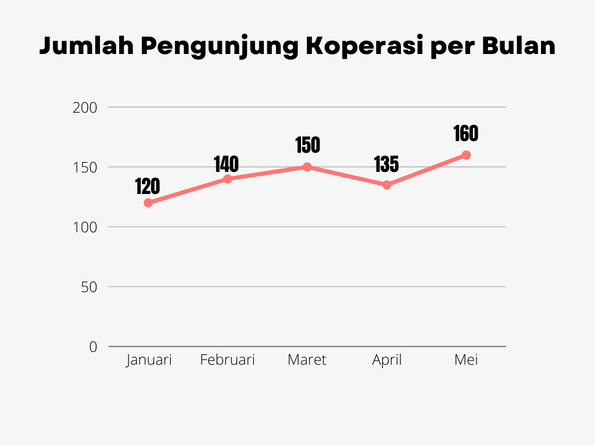 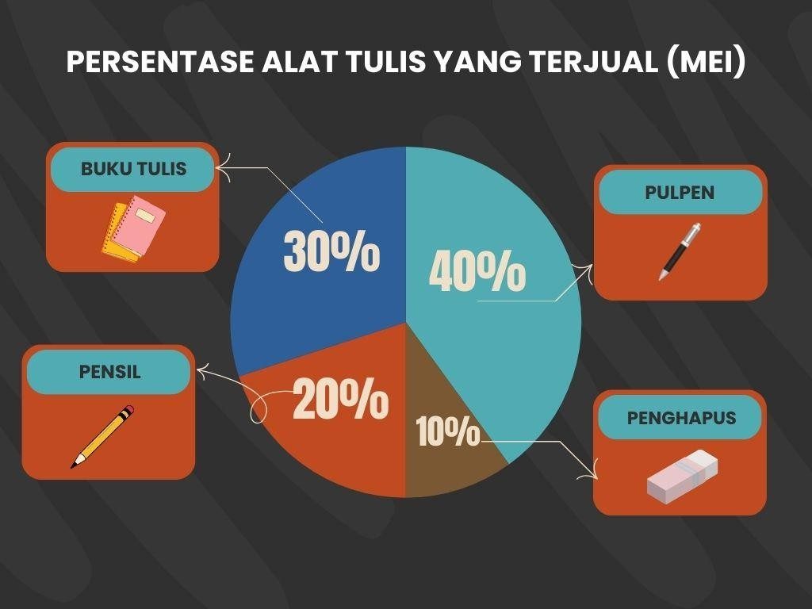
Berdasarkan kedua data tersebut, tentukan manakah pernyataan yang benar untuk setiap pernyataan berikut?
Pilih semua jawaban benar! Jawaban benar lebih dari satu.
PGK7. Sebuah sensor otomatis diuji untuk mendeteksi kendaraan yang melintas. Pengujian dilakukan dalam tiga tahap dengan hasil sebagai berikut:
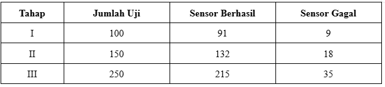
Data tersebut digunakan untuk memperkirakan peluang kegagalan sensor pada satu kali deteksi berikutnya.
Berdasarkan hasil pengujian sensor pada tabel, manakah pernyataan yang benar tentang pengujian sensor tersebut? Pilih semua jawaban benar! Jawaban benar lebih dari satu.
Data tersebut digunakan untuk memperkirakan peluang kegagalan sensor pada satu kali deteksi berikutnya.
Berdasarkan hasil pengujian sensor pada tabel, manakah pernyataan yang benar tentang pengujian sensor tersebut? Pilih semua jawaban benar! Jawaban benar lebih dari satu.
III. Analisis Pernyataan (Benar/Salah)
BS1. Perhatikan cerita berikut:
Berdasarkan situasi tersebut, tentukan Benar atau Salah untuk setiap pernyataan berikut tentang penyelesaiaan renovasi gedung tersebut!
Proyek Renovasi Gedung
Proyek renovasi suatu gedung sekolah harus diselesaikan paling lambat dalam waktu 60 hari sesuai dengan kontrak kerja yang telah disepakati bersama. Manajer proyek telah menghitung kebutuhan tenaga kerja dengan asumsi setiap pegawai memiliki kemampuan dan produktivitas yang sama setiap harinya. Kemajuan proyek sangat bergantung pada jumlah pegawai; semakin banyak pegawai yang bekerja, maka waktu pengerjaan akan semakin singkat.
Pekerjaan dinyatakan selesai jika seluruh beban kerja telah terpenuhi. Jika terjadi kendala pada jumlah pegawai atau waktu kerja, manajer harus melakukan penyesuaian agar total beban kerja tetap terpenuhi tepat waktu. Penyesuaian ini sangat penting dilakukan agar renovasi gedung selesai tepat 60 hari tanpa melanggar batas kontrak yang ada.
Rencana awal, renovasi gedung dilakukan oleh 15 pegawai. Namun, pada 10 hari pertama, hanya 10 pegawai yang bekerja karena sebagian lainnya harus beristirahat. Setelah hari ke-10, seluruh pegawai (15 orang) kembali bekerja.
Proyek renovasi suatu gedung sekolah harus diselesaikan paling lambat dalam waktu 60 hari sesuai dengan kontrak kerja yang telah disepakati bersama. Manajer proyek telah menghitung kebutuhan tenaga kerja dengan asumsi setiap pegawai memiliki kemampuan dan produktivitas yang sama setiap harinya. Kemajuan proyek sangat bergantung pada jumlah pegawai; semakin banyak pegawai yang bekerja, maka waktu pengerjaan akan semakin singkat.
Pekerjaan dinyatakan selesai jika seluruh beban kerja telah terpenuhi. Jika terjadi kendala pada jumlah pegawai atau waktu kerja, manajer harus melakukan penyesuaian agar total beban kerja tetap terpenuhi tepat waktu. Penyesuaian ini sangat penting dilakukan agar renovasi gedung selesai tepat 60 hari tanpa melanggar batas kontrak yang ada.
Berdasarkan situasi tersebut, tentukan Benar atau Salah untuk setiap pernyataan berikut tentang penyelesaiaan renovasi gedung tersebut!
| Pernyataan | B | S |
|---|---|---|
| Sisa pekerjaan yang harus diselesaikan setelah hari ke-10 adalah setara dengan pekerjaan 800 hari penuh yang dikerjakan 1 orang. | ||
| Selama 10 hari pertama, proyek mengalami ketertinggalan jadwal yang setara dengan hasil kerja 5 orang selama 10 hari. | ||
| Agar renovasi tetap selesai tepat waktu manajer cukup mempekerjakan kembali 15 pegawai semula tanpa perlu menambah tenaga kerja tambahan. |
BS2. Perhatikan Stimulus Berikuti ini:
Posko PMI menambahkan satu tempat lagi untuk proses pengambilan darah dan di tahap pemulihan. Sehingga dapat melayani 2 orang sekaligus para proses pengambilan darah. Pada hari ini saat pukul 11.30 terlihat sudah ada 2 orang yang sedang berada di ruang pemulihan. Salah seorang baru saja memulai tahap pemulihan dan satu orang lainnya sudah berjalan 15 menit. Adapula 1 orang calon pendonor yang akan melakukan pendaftaran, 1 orang akan melakukan pemeriksaan kesehatan, 1 orang di kursi tunggu, 2 orang sedang proses pengambilan darah.
Tentukan Benar atau Salah untuk setiap pernyataan berikut tentang situasi di lokasi donor darah pada hari tersebut!
Alur Pelayanan Donor
DarahKegiatan donor adalah salah satu bentuk aksi kemanusian yang sangat bermanfaat untuk diri sendiri dan orang lain. Setetes darah yang disumbangkan dapat memberikan harapan hidup bagi orang lain yang membutuhkan, terutama mereka yang mengalami kecelakaan, setelah menjalani operasi, atau menderita penyakit yang serius. Tak hanya untuk penerima, pendonor juga bisa mendapatkan manfaat. Diantaranya bermanfaat untuk mendeteksi penyakit, meningkatkan produksi sel darah, dan menjaga kesehatan jantung. Oleh karena itu disarankan untuk melakukan donor darah tiga bulan setelah donor darah terakhir. Biasanya aksi donor darah difasilitasi oleh Palang Merah Indonesia (PMI). Berikut adalah alur kegiatan donor darah di sebuah posko PMI.
DarahKegiatan donor adalah salah satu bentuk aksi kemanusian yang sangat bermanfaat untuk diri sendiri dan orang lain. Setetes darah yang disumbangkan dapat memberikan harapan hidup bagi orang lain yang membutuhkan, terutama mereka yang mengalami kecelakaan, setelah menjalani operasi, atau menderita penyakit yang serius. Tak hanya untuk penerima, pendonor juga bisa mendapatkan manfaat. Diantaranya bermanfaat untuk mendeteksi penyakit, meningkatkan produksi sel darah, dan menjaga kesehatan jantung. Oleh karena itu disarankan untuk melakukan donor darah tiga bulan setelah donor darah terakhir. Biasanya aksi donor darah difasilitasi oleh Palang Merah Indonesia (PMI). Berikut adalah alur kegiatan donor darah di sebuah posko PMI.
Posko PMI menambahkan satu tempat lagi untuk proses pengambilan darah dan di tahap pemulihan. Sehingga dapat melayani 2 orang sekaligus para proses pengambilan darah. Pada hari ini saat pukul 11.30 terlihat sudah ada 2 orang yang sedang berada di ruang pemulihan. Salah seorang baru saja memulai tahap pemulihan dan satu orang lainnya sudah berjalan 15 menit. Adapula 1 orang calon pendonor yang akan melakukan pendaftaran, 1 orang akan melakukan pemeriksaan kesehatan, 1 orang di kursi tunggu, 2 orang sedang proses pengambilan darah.
Tentukan Benar atau Salah untuk setiap pernyataan berikut tentang situasi di lokasi donor darah pada hari tersebut!
| Pernyataan | B | S |
|---|---|---|
| Posko PMI mulai didatangi calon pendonor sejak pukul 10.30. | ||
| Ada kemungkinan terdapat 3 orang di ruang tunggu. | ||
| Pada pukul 11.00 belum ada pendonor yang memasuki tahap pemulihan. |
BS3.
Misalkan \(a\) dan \(b\) merupakan dua bilangan real sehingga sistem persamaan linear (SPL)
\[ \left\{ \begin{array} 2x + ay &=& 4 \\ bx - 2y &=& -1 \end{array} \right. \]
mempunyai solusi \((x,y) = (5,-2)\).
| Pernyataan | B | S |
|---|---|---|
| \(a\) merupakan bilangan prima. | ||
| \(b\) merupakan bilangan ganjil. | ||
| \(10a + b = 31 \) |
BS4. Seorang tukang memotong papan kayu dengan berbagai ukuran panjang.
Potongan pertama panjangnya 240 cm, dan setiap potongan berikutnya lebih pendek 12 cm dari potongan sebelumnya.
Tukang tersebut menghasilkan 9 potongan kayu.
Tentukan Benar atau Salah untuk setiap pernyataan berikut tentang potongan kayu yang dihasilkan tukang tersebut!
Tentukan Benar atau Salah untuk setiap pernyataan berikut tentang potongan kayu yang dihasilkan tukang tersebut!
| Pernyataan | B | S |
|---|---|---|
| Panjang potongan ke-5 adalah 190 cm. | ||
| Panjang potongan terakhir adalah 144 cm. | ||
| Selisih panjang antara potongan ke-2 dan potongan ke-8 adalah 72 cm. |
BS5. Desain jembatan yang tepat sangat penting untuk memperkuat struktur karena menentukan kestabilan,
ketahanan, dan keselamatan jembatan dalam menghadapi beban dan kondisi lingkungan. Salah satu contoh desain jembatan tampak pada gambar.
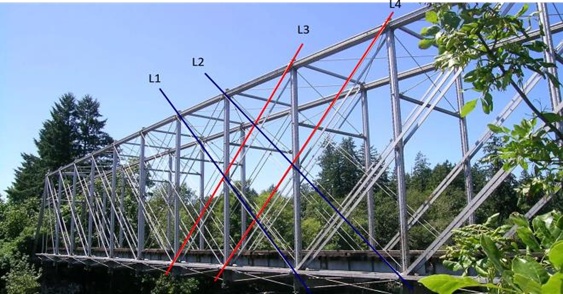
Bagian rangka jembatan tersebut dapat digambarkan dengan sketsa garis sebagai berikut:
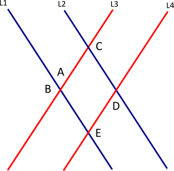
Diketahui garis L1 sejajar dengan garis L2 dan garis L3 sejajar dengan garis L4. Jika besar sudut A adalah 50°, tentukan Benar atau Salah untuk setiap pernyataan berikut!
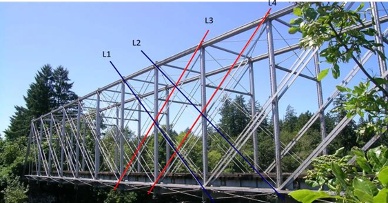
Bagian rangka jembatan tersebut dapat digambarkan dengan sketsa garis sebagai berikut:
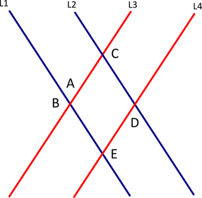
Diketahui garis L1 sejajar dengan garis L2 dan garis L3 sejajar dengan garis L4. Jika besar sudut A adalah 50°, tentukan Benar atau Salah untuk setiap pernyataan berikut!
| Pernyataan | B | S |
|---|---|---|
| Besar sudut \(D\) adalah \(50^{\circ}\) | ||
| Besar sudut \(C\) dapat ditentukan dengan menggunakan aturan sudut berpelurus yaitu sebesar \(50^{\circ}\) | ||
| Sudut \(B\) dan \(E\) sama besar yaitu \(130^{\circ}\) |
BS6. Perhatikan gambar segitiga berikut:
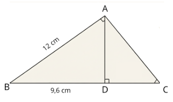
Tentukan Benar atau Salah untuk setiap pernyataan berikut tentang bangun segitiga pada gambar tersebut!
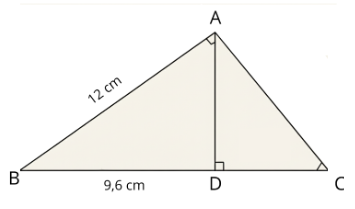
Tentukan Benar atau Salah untuk setiap pernyataan berikut tentang bangun segitiga pada gambar tersebut!
| Pernyataan | B | S |
|---|---|---|
| Segitiga ABD dan segitiga CAD saling sebangun. | ||
| Panjang sisi BC adalah 15 cm. | ||
| Panjang sisi AC adalah 10 cm. |
BS7. Di sebuah taman kota berbentuk persegi panjang,
terdapat sebuah kolam berbentuk lingkaran yang terletak tepat di tengah-tengah taman,
seperti terlihat pada gambar berikut.
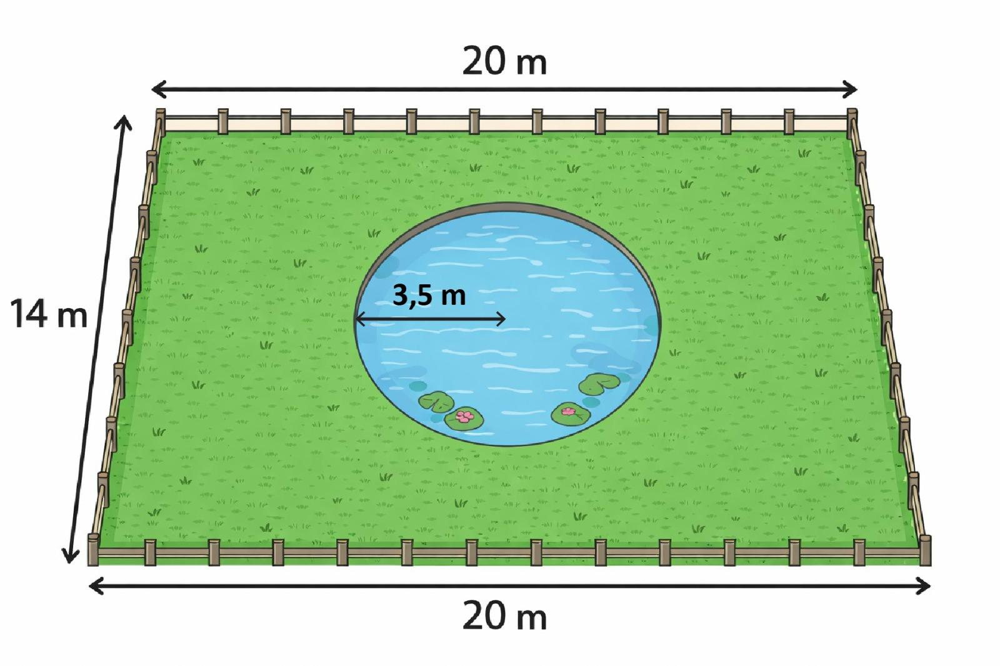
Area taman lainnya (area hijau pada gambar) akan ditanami rumput.
Tentukan Benar atau Salah untuk setiap pernyataan berikut tentang luas area kolam dan area yang ditanami rumput! (Gunakan \(\pi = \dfrac{22}{7}\))
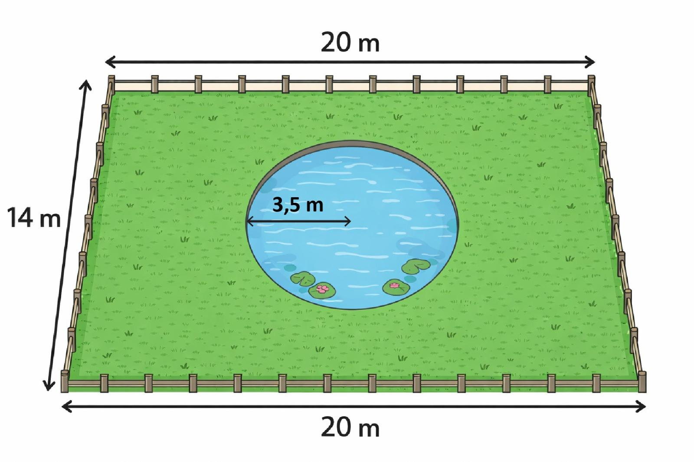
Area taman lainnya (area hijau pada gambar) akan ditanami rumput.
Tentukan Benar atau Salah untuk setiap pernyataan berikut tentang luas area kolam dan area yang ditanami rumput! (Gunakan \(\pi = \dfrac{22}{7}\))
| Peryataan | B | S |
|---|---|---|
| Selisih antara luas taman dan luas kolam lebih dari 240 m². | ||
| Jika diameter kolam ditambah 1 m, luas kolam bertambah lebih dari 7 m². | ||
| Luas daerah yang ditanami rumput kurang dari 240 m². |